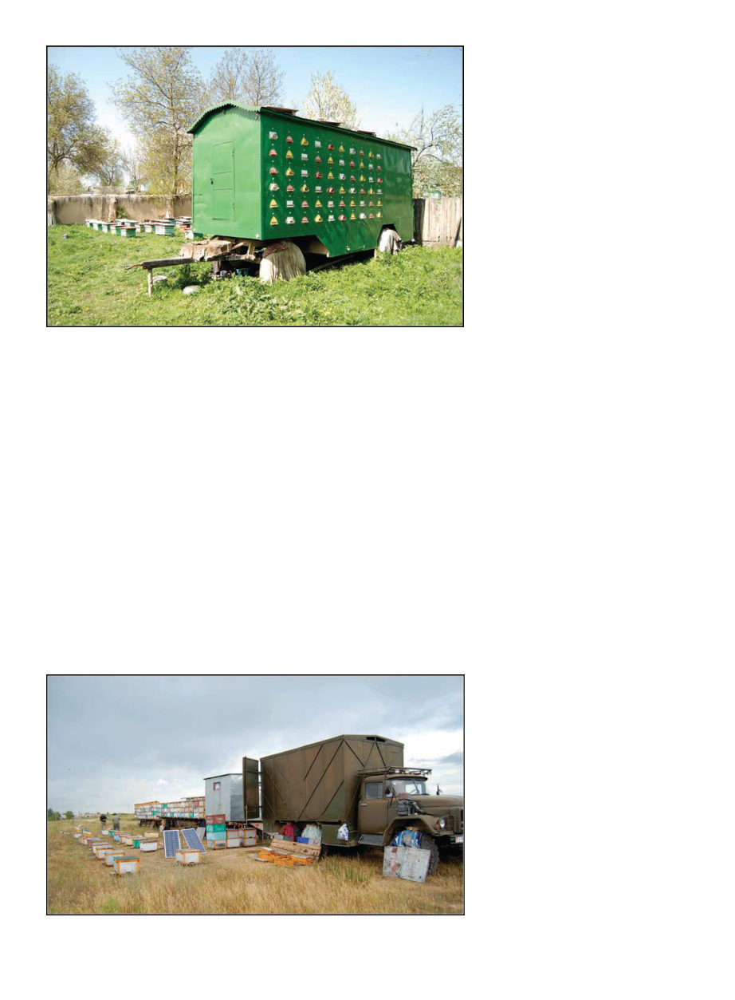

American Bee Journal
704
Before, after, or both, every bee-
keeper we visited would offer me tea
and a smorgasbord of fresh home-
made jams and other fresh delicacies
either made at home or by a neighbor.
Even the tea was often picked by the
wife from local plants. For dinner ev-
ery day in the Osh area we had a dish
known as “osh,” a rice pilaf with meat
in it. When I returned for my second
project in the east of Kyrgyzstan, I
was staying in a crumbling Russian
hotel that was a bit of a cliché of itself
— assigned seating in the canteen!
Tickets for meals! Borsht again? But
when I ate out, the food seemed to
be cousins of dishes I’d seen in Tur-
key — the Kyrgyz culture is part of
a Turkic-Mongol cultural continuum
across central Asia.
Everywhere I go, I find beekeepers
to be an innovative lot, and Kyrgyz-
stan was no exception. I witnessed
many clever homemade tools and in-
teresting techniques. While it seems
most common to simply put beehives
on the back of a flatbed, one man who
was also a math and chemistry teach-
er at the local high school had built an
impressive bee trailer with 120 hives
built into it, which could be accessed
from pull-out drawers on the inside.
Within the trailer was a miniature
extracting room with two fold-out
bunks, a fold-out workbench over
the extractor, and the extractor itself
which drained into storage tanks
slung under the trailer.
Meeting with beekeepers, I contin-
ued to discuss and share technical de-
tails of dimensions of different types
of hives and their pros and cons, as
well as scientifically-informed mite
treatment. Most beekeepers had de-
vised a workable mite management
regimen, but often they didn’t actu-
ally know the name of what they
were using. I’m a big believer in ro-
tating treatments, and Randy Oliver’s
research and diagrams — some of
which I use on these projects, with his
permission. One thing I love about
our industry is how accessible all the
influential people in it are. A ques-
tion comes up I don’t know the an-
swer to, I find I can email the expert
whose research most closely touches
on the question and they will usually
answer within 24 hours, and, deep in
the most obscure bush, I have the an-
swer in my inbox.
Several of the more experienced
local beekeepers seemed to be ad-
ept at queen breeding, and yet, one
practice I saw over and over again
was that beekeepers in Kyrgyzstan
seemed to generally significantly rely
on queens from far away in Ukraine.
Even though it was hard to get them,
there seemed to be a persistent belief
that such queens are inherently better
than anything locally bred could be. I
am a firm believer in locally adapted
stock. I’ve seen again and again on
these projects beekeepers hoping I’ll
bring them some golden bullet, ex-
pressing eagerness and hope I’ll have
some revolutionary new idea, but
whatever change I really do recom-
mend, they don’t really want to hear.
In Egypt it was allowing hives to grow
beyond one box in size (“ten frames?
Time to split!” they say). Here it was
breeding and buying local queens. Of
note, Drs Sheppard and Meixner’s
research on bees in the area have
identified a distinct subspecies, Apis
mellifera pomonella, the name referenc-
ing their co-evolution in particularly
close conjunction with apples, which
apparently originated in the same re-
gion (see Sheppard & Meixner, “Apis
mellifera pomonella, a new honey
bee subspecies from Central Asia,”
Apidologie, 367-375, 2003).
August 11th, 2017, Australia – I
wake up wrapped in blankets against
the Antarctic winter cold. I’m sup-
posed to fly to Congo that evening. I
put on my glasses and blearily look
at my phone to see what emails came
in overnight and find I am not in fact
going to Congo; the plan has changed
and I’m instead going back to Kyr-
gyzstan! If you had asked me in high
school if I wanted to be a professional
beekeeper I might have said, “No, I
want to travel!” Little did I know.
This time I headed east from the
Kyrgyz capital by car to near the large
The light-blue structure on the trailer is the bunk house.
The described bee trailer. Note the different entrance shapes to allow bees to find the
correct entrance.